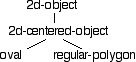
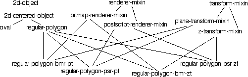

Мы впервые столкнулись со структурами в Главе 3, а затем узнали об их некотором необязательных поведении в Главе 6. В этой главе мы начнем изучать объекты в системе Common Lisp Object System (CLOS). А пока мы рассмотрим только способы использования объектов для структурирования данных. Позже, в Главе 14, мы узнаем больше о CLOS.
Когда вы программируете с объектами, вы будете пытаться каким-то образом создать модель некоторой части реального мира. Когда вы сделаете это, вы, вероятно, заметите, что некоторые объекты состоят из более мелких частей. Каждая часть имеет свою собственную идентичность; часть идентифицируется сама по себе, отдельно от любого объекта, частью которого она может быть. Кроме того, часть может быть сделана из более мелких деталей. Если вы нарисуете картину отношений компонентов между всеми частями какого-либо сложного объекта, вы обнаружите, что они образуют иерархию. Полностью собранный объект будет находиться на вершине иерархии (первый уровень), все его части будут находиться на втором уровне, все части, составляющие части второго уровня, будут находиться на третьем уровне и так далее. Эта иерархия является иерархией содержания; каждый уровень представляет объект, а следующий самый низкий уровень представляет объекты, которые являются частями объекта на более высоком уровне. Объект на более высоком уровне содержит (или имеет в качестве частей) некоторые объекты на более низком уровне иерархии, а объект на более низком уровне содержится (или является частью) некоторого объекта на более высоком уровне.
Иерархии содержания важны, поскольку они моделируют отношения "имеет" и "является-частью" между объектами. Эти отношения упрощают модель реального мира вашей программы, позволяя вам мыслить в терминах относительно небольших составных частей, а не моделировать один очень сложный объект. Моделирование с помощью содержания также окупается, когда вы можете смоделировать аналогичный объект в терминах комбинации других компонентов.
Объект может обладать определенными характеристиками, которые не могут быть отделены от объекта. Например, объект может иметь цвет, размер, массу, скорость и температуру. Эти характеристики не являются составными частями объекта; они не могут быть отделены от объекта и не могут быть объединены для создания новых объектов. Эти характеристики являются (attributes)атрибутами объекта.
Другой тип иерархии, с которым вы будете работать как программист объектов - это иерархия классификации. В классификационной иерархии объекты связаны отношениями типа "is-a-kind-of" (или, более кратко,"is-a" или"a-k-o"). Эти отношения также имеют различные названия в зависимости от нашей точки зрения: если А является разновидностью B, то А является специализацией B, а B - обобщением А.
С ростом интереса к объектному программированию, многие специализированные лексиконы выросли для поддержки конкретных методов и языков. После исключения терминов, описывающих особенности конкретной методологии или языковой реализации, обычно остается переименование локальных иерархий и классификации (и отношений, поддерживаемых каждой из них) и некоторый способ указания атрибутов объекта. На самом деле, наиболее распространенным переименованием ссылаться на классификационную иерархию как на иерархию "класса".
Объект CLOS определяется формой DEFCLASS.
DEFCLASS описывает только объект. Для создания
экземпляра объекта можно использовать форму MAKE-INSTANCE.
Вот как бы вы определили тривиальный объект:
? (defclass empty-object () ()) #<STANDARD-CLASS EMPTY-OBJECT>
Этот класс не очень интересен; () - это заполнители для
будущих вещей. Кроме того, обратите внимание, что эта конкретная система
Lisp печатает #<STANDARD-CLASS EMPTY-OBJECT> в ответ
на форму DEFCLASS. Это нечитабельно - Reader(читатель)
сигнализирует об ошибке всякий раз, когда он читает форму, начинающуюся с
#<, но это дает вам знать, что произошло что-то полезное.
Как только вы определили класс, вы можете использовать его для создания объектов.
Большинство форм, которым требуется класс, принимают имя класса, или вы можете
использовать FIND-CLASS для получения фактического класса,
учитывая его имя. MAKE-INSTANCE создает новый объект, заданный именем класса или классом:
? (make-instance 'empty-object) #<EMPTY-OBJECT #x3CA1206> ? (make-instance 'empty-object) #<EMPTY-OBJECT #x3CA1DFE> ? (find-class 'empty-object) #<STANDARD-CLASS EMPTY-OBJECT> ? (make-instance (find-class 'empty-object)) #<EMPTY-OBJECT #x3CB397E>
Опять же, система Lisp отвечает нечитаемым объектом. На этот раз ответ
включает в себя адрес хранения объекта. Большинство систем Lisp имеют
принтер(функцию вывода) по умолчанию для объектов CLOS, который работает
также, хотя детали могут немного отличаться. Важно отметить, что
MAKE-INSTANCE создает новый объект каждый раз, когда
она вызывается.
Даже если принтер объектов показывает разные адреса для
каждого объекта, вы не должны зависеть от печатного представления для
идентификации объекта. Системы Lisp могут (и делают) изменять адрес
объектов во время выполнения. Единственный способ достоверно сравнить
идентичность объекта - это использовать проверку идентичности, например
EQ (см. Главу 17).
Наша первая форма DEFCLASS определила объект, который
не был хорош ни для чего. Теперь мы увидим, как расширить определение
класса, чтобы наши объекты имели именованные слоты. Они служат той
же цели, что и слоты в структурах
(Глава 3), они просто хранят данные.
Эти данные могут быть атрибутами объекта, содержащимися в нем объектами или
ссылками на связанные объекты.
Чтобы определить класс для объекта со слотами, мы начинаем с
формы DEFCLASS и добавляем определения слотов,
например:
? (defclass 3d-point () (x y x)) #<STANDARD-CLASS 3D-POINT>
Здесь мы определили класс 3D-POINT, объекты которого
будут иметь три слота с именами X, Y, и
Z. Это может быть похоже на определение структуры,
например
(defstruct 3d-point-struct x y z)
но на самом деле класс обладает меньшей функциональностью,
чем структура. Класс не определяет методы доступа по умолчанию
для слотов. Чтобы получить доступ к слотам, вам нужно будет
использовать SLOT-VALUE, как в этом примере:
? (let ((a-point (make-instance '3d-point)))
(setf (slot-value a-point 'x) 0) ; set the X slot
(slot-value a-point 'x)) ; get the X slot
0
Если вы попытаетесь получить значение слота до его установки, Lisp будет сигнализировать об ошибке, потому что слот не привязан (т. е. у него нет значения).
? (let ((a-point (make-instance '3d-point)))
(slot-value a-point 'y))
> Error: Slot Y is unbound in #<3D-POINT #x3CD3216>
Получение и установка слотов с формами SLOT-VALUE немного
громоздко по сравнению с аксессорами, созданными автоматически для слотов в
структуре. К счастью, вы можете указать методы доступа(аксессоры) для каждого
слота при определении класса.
(defclass 3d-point () ((x :accessor point-x) (y :accessor point-y) (z :accessor point-z)))
Тогда доступ к слоту объекта выглядит так же, как и доступ к слоту структуры.
? (let ((a-point (make-instance '3d-point)))
(setf (point-x a-point) 0)
(point-x a-point))
0
Вы также можете указать отдельные имена доступа для чтения и записи слота.
? (defclass 3d-point ()
((x :reader get-x :writer set-x)
(y :reader get-y :writer set-y)
(z :reader get-z :writer set-z)))
#<STANDARD-CLASS 3D-POINT>
? (let ((a-point (make-instance '3d-point)))
(set-z 3 a-point)
(get-z a-point))
3
Видите ли вы разницу между указанием: :accessor и
:writer? Обратите внимание, что слот writer(записи)
не используется с SETF. Также обратите внимание
на порядок аргументов для слота (writer)записи слота: сначала значение,
затем объект.
Когда вы пишете сложную программу, полезно иметь все эти опции для доступа
к слоту. С помощью различных комбинаций определений доступа к слоту вы
можете предоставить доступ к слоту для чтения/записи, только для чтения,
только для записи или вообще без доступа. Вы можете подумать, что последние
два случая будут бесполезны, но это не так. Слот только для записи может
предоставлять информацию, которая полезна только для установления состояния
внутри объекта в ответ на запрос клиента объекта - например, семя(seed) для
генератора случайных чисел. Слот без доступа может содержать информацию,
которая должна быть известна только по внутренней работе объекта; функции,
которые управляют внутренним состоянием объекта, все еще могут получить
доступ к слоту с помощью SLOT-VALUE.
Существование SLOT-VALUE является анафемой для некоторых
проектировщиков объектов, которые считают, что конфиденциальность
внутренней информации объекта должна быть абсолютно защищена от
клиентского доступа. Lisp требует применения дисциплины программиста
для защиты внутренней информации объекта. Как правило, вы должны использовать
SLOT-VALUE для управления частными слотами и предоставлять
соответствующие именованные средства доступа для всех других слотов.
Сделав это, любое появление формы с SLOT-VALUE в клиентской
программе сигнализирует о нарушении вашего намерения скрыть внутреннее
состояние какого-либо объекта.
В этом разделе мы рассмотрим, как определить специальные средства доступа, которые делают больше, чем просто чтение и запись значений слотов. Думайте об этом как о тайном просмотре Главы 14.
Давайте определим сферу. Сфера определяется своим положением в 3-м пространстве и своим радиусом. Мы хотели бы запрашивать сферу о ее объеме. Наконец, мы хотели бы иметь возможность перемещать-или переводить-положение сферы на определенную величину без необходимости явно вычислять ее новые координаты. Мы начнем с этого определения класса:
? (defclass sphere ()
((x :accessor x)
(y :accessor y)
(z :accessor z)
(radius :accessor radius)
(volume :reader volume)
(translate :writer translate)))
#<STANDARD-CLASS SPHERE>
Методы доступа для X, Y, Z,
и RADIUS не нуждаются в дальнейшем объяснении, но методы
доступа для VOLUME и TRANSLATE еще бесполезны;
метод чтения VOLUME потерпит неудачу, потому что его слот не связан,
и метод записи TRANSLATE не будет делать ничего, кроме
установки своего слота.
Мы закончим определение нашей сферы, сначала заставив VOLUME
возвращать значение, вычисленное по радиусу сферы. Есть два способа сделать
это: заставить VOLUME прочитать радиус сферы и вычислить
соответствующий объем или заставить RADIUS вычислить объем
и установить слот объема для последующего использования средством доступа
к VOLUME. Вот оба решения - если вы попробуете его сделать,
выберите только одно:
; Volume from Radius
(defmethod volume ((object sphere))
(* 4/3 pi (expt (radius object) 3)))
; Radius to Volume
(defmethod radius ((new-radius number) (object sphere))
(setf (slot-value object 'radius) new-radius)
(setf (slot-value object 'volume)
(* 4/3 pi (expt new-radius 3))))
Это не самый лучший пример стиля Lisp. Вы определяете метод чтения или записи по умолчанию в форме DEFCLASS, а затем переопределяете метод, чтобы добавить специальное поведение. Ваша система Lisp может предупредить вас о попытке переопределения; это нормально, продолжить с предупреждением и переопределить метод.Один из способов избежать этой проблемы - опустить параметр slot, который определяет значение по умолчанию:
:READER(дляVOLUME) или:WRITER(дляTRANSLATE) в формеDEFCLASS, но тогда вы потеряете документирование, предоставляемое этими объявлениями. В Главе 14 мы увидим некоторые другие объявления, которые могут помочь улучшить читаемость кода.
Форма DEFMETHOD определяет функцию, которая применяется
только к определенным типам аргументов. В этом случае метод
VOLUME применяется только к объектам SPHERE,
а метод RADIUS - только к NUMBER (новому радиусу)
и SPHERE. Метод VOLUME вычисляет объем по радиусу
сферы при каждом ее вызове. Метод RADIUS вычисляет объем сферы
каждый раз, когда устанавливается радиус; значения как радиуса, так и объема
сохраняются в слотах сферы с помощью форм SLOT-VALUE.
Вы можете думать о том, что читатель и писатель слотов по умолчанию
определяются следующим образом (но компилятор, вероятно, генерирует
лучший код, если вы просто используете стандартные методы доступа,
созданные автоматически опциями слотов: :READER и
:WRITER):
; Default slot reader (illustration only) (defmethod slot-reader ((object object-class)) (slot-value object 'slot-name)) ; Default slot writer (illustration only) (defmethod slot-writer (new-value (object object-class)) (setf (slot-value object 'slot-name) new-value))
Специализация - одно из важнейших понятий объектного программирования. Специализация позволяет определить объект в терминах другого объекта путем описания новых или отличающихся признаков; базовая функциональность объекта наследуется от определения родительского объекта.
В самом простом виде специализации, одиночном наследовании, наследник наследует черты только от одного родителя. В качестве примера мы определим некоторые базовые двумерные объекты, используя одиночную иерархию наследования.
(defclass 2d-object () ()) (defclass 2d-centered-object (2d-object) (x :accessor x) (y :accessor y) (orientation :accessor orientation) (defclass oval (2d-centered-object) (axis-1 :accessor axis-1) (axis-2 :accessor axis-2)) (defclass regular-polygon (2d-centered-object) (n-sides :accessor number-of-sides) (size :accessor size))
Граф наследования для этих четырех классов выглядит следующим образом:

Класс 2D-OBJECT - это заполнитель, из которого
мы могли бы впоследствии вывести другие 2D-объекты, например
линии и точки. 2D-CENTERED-OBJECT объект имеет опорное положение
по центру, заданное его атрибутами X и Y,
и ориентацию - величину поворота объекта относительно его центрального
положения. Классы OVAL и REGULAR-POLYGON
наследуются от 2D-CENTERED-OBJECT, сохраняя атрибуты положения
и ориентации родительского класса и добавляя атрибуты, соответствующие геометрии производных объектов.
CLOS поддерживает множественное наследование, которое позволяет классу наследовать признаки от нескольких родителей. Это полезно для стиля программирования, который начинается с общей функциональности, а затем "смешивает" расширения с базовым поведением.
В качестве примера предположим, что мы хотели бы написать код для визуализации 2D-объектов, которые мы начали определять в предыдущем разделе. Предположим, что мы хотели бы достичь двух целей одновременно: мы хотели бы визуализировать изображения либо на растровом(bitmapped), либо на Постскриптумном(Postscript) устройстве отображения, и мы хотели бы визуализировать объекты либо на плоской поверхности, либо в виде проекции в пространстве "2.5 D", где каждый 2D-объект имеет глубину Z, и система обеспечивает выбор позиций просмотра. Эти требования вовсе не являются взаимозависимыми; один из них имеет дело с деталями визуализации объектов на устройстве отображения, в то время как другой имеет дело с преобразованиями объектов, которые должны произойти до визуализации.
Одним из способов выполнения этих требований является использование множественного наследования. Один подмешиваемый набор обрабатывает преобразования, в то время как другой подмешиваемый набор обрабатывает детали рендеринга для устройства отображения. Благодаря тщательно разработанному протоколу обмена информацией, новые комбинации преобразований и визуализаторов могут быть добавлены к нашим 2D-объектам без переписывания какого-либо существующего кода.
Мы видели в предыдущем разделе, как одиночное наследование записывается
с помощью DEFCLASS, помещая имя родительского класса в
первые скобки после нового имени класса. Классы, которые наследуются
от нескольких родителей, просто перечисляют всех родителей. Таким образом,
чтобы определить все комбинации преобразования и рендеринга для нашего
класса REGULAR-POLYGON, мы могли бы сделать что-то вроде этого:
(defclass renderer-mixin () (...))
(defclass bitmap-renderer-mixin (renderer-mixin) (...))
(defmethod render (description (self bitmap-renderer-mixin)) ...)
(defclass postscript-renderer-mixin (renderer-mixin) (...))
(defmethod render (description (self postscript-renderer-mixin)) ...)
(defclass transform-mixin () (...))
(defclass plane-transform-mixin (transform-mixin) (...))
(defmethod transform ((self plane-transform-mixin)) ...)
(defclass z-transform-mixin (transform-mixin) (...))
(defmethod transform ((self z-transform-mixin)) ...)
(defmethod draw ((self regular-polygon))
(render (transform self) self))
(defclass regular-polygon-bmr-pt (regular-polygon
bitmap-renderer-mixin
plane-transform-mixin)
(...))
(defclass regular-polygon-psr-pt (regular-polygon
postscript-renderer-mixin
plane-transform-mixin)
(...))
(defclass regular-polygon-bmr-zt (regular-polygon
bitmap-renderer-mixin
z-transform-mixin)
(...))
(defclass regular-polygon-psr-zt (regular-polygon
postscript-renderer-mixin
z-transform-mixin)
(...))
Теперь наша иерархия классов выглядит так:

Я показал несколько определений методов, чтобы дать вам представление
о том, как протокол рисования взаимодействует с подмешиваемыми определениями
для создания ожидаемого поведения. Метод DRAW,
специализированный на классе REGULAR-POLYGON обеспечивает
следующий протокол: он вызывает TRANSFORM, чтобы применить
преобразование к самому себе, а затем RENDER, чтобы нарисовать
самого себя, используя некоторое (пока еще не определенное) описание,
сгенерированное TRANSFORM.
Теперь давайте предположим, что мы создали экземпляр
REGULAR-POLYGON-BMR-PT и вызвали метод
DRAW:
(let ((poly (make-instance 'regular-polygon-bmr-pt ...))) (draw poly))
Метод DRAW не специализируются в
классе REGULAR-POLYGON-BMR-PT, поэтому мы вызываем
метод более общий, специализированный в REGULAR-POLYGON.
Затем этот метод DRAW пытается вызвать методы
TRANSFORM и RENDER, которые специализируются
в классе REGULAR-POLYGON-BMR-PT; эти методы определены,
поэтому они обеспечивают ожидаемое подмешиваемое поведение.
Как вы можете видеть из этого очень простого примера, подмешивание
являются мощным инструментом для объектного программирования.
Предварительно определив очень простой протокол - метод DRAW,
который вызывает TRANSFORM и RENDER, - мы можем
добавить новое поведение в нашу систему, определив дополнительные подмешивания.
Исходный код остается неизменным. Поскольку Lisp может добавлять определения
динамически, вам даже не нужно останавливать свое программное обеспечение,
чтобы расширить его таким образом.
По умолчанию слоты объекта не связваются в новом объекте. Во многих
случаях было бы более полезно придать слотам некоторое значимое
начальное значение. Например, наша 3D-POINT может быть
инициализирована в начале координат.
(defclass 3d-point () ((x :accessor point-x :initform 0) (y :accessor point-y :initform 0) (z :accessor point-z :initform 0)))
Параметр :INITFORM слота предоставляет значение для слота
в момент создания объекта. Форма инициализации вычисляется каждый раз,
когда она используется для инициализации слота.
Кроме того, при создании объекта может потребоваться указать
конкретные аргументы инициализации. Для этого используйте опцию
слота: :INITARG.
(defclass 3d-point () ((x :accessor point-x :initform 0 :initarg :x) (y :accessor point-y :initform 0 :initarg :y) (z :accessor point-z :initform 0 :initarg :z)))
Чтобы создать 3D-POINT объект с использованием
явных инициализаторов, вы должны сделать что-то вроде этого:
(make-instance '3d-point :x 32 :y 17 :z -5)
Поскольку определение класса включает в себя оба параметра
:INITFORM и :INITARG, слот все равно
получит значение по умолчанию, если вы опустите явный инициализатор.
Определения слотов также позволяют использовать параметры
:DOCUMENTATION и :TYPE.
(defclass 3d-point ()
((x :accessor point-x :initform 0 :initarg :x
:documentation "x coordinate" :type real)
(y :accessor point-y :initform 0 :initarg :y
:documentation "y coordinate" :type real)
(z :accessor point-z :initform 0 :initarg :z
:documentation "z coordinate" :type real)))
Параметр :TYPE может использоваться компилятором
для помощи в оптимизации кода или для создания тестов времени
выполнения при установке слотов. Однако это поведение может отличаться
у разных компиляторов Lisp, и стандарт не требует какой-либо
интерпретации этого параметра. Поэтому лучше всего думать о нем как о
дополнительной документации для человека, читающему вашу программу.
В Главе 14 мы рассмотрим методы более подробно и увидим, как связать поведение с объектами.